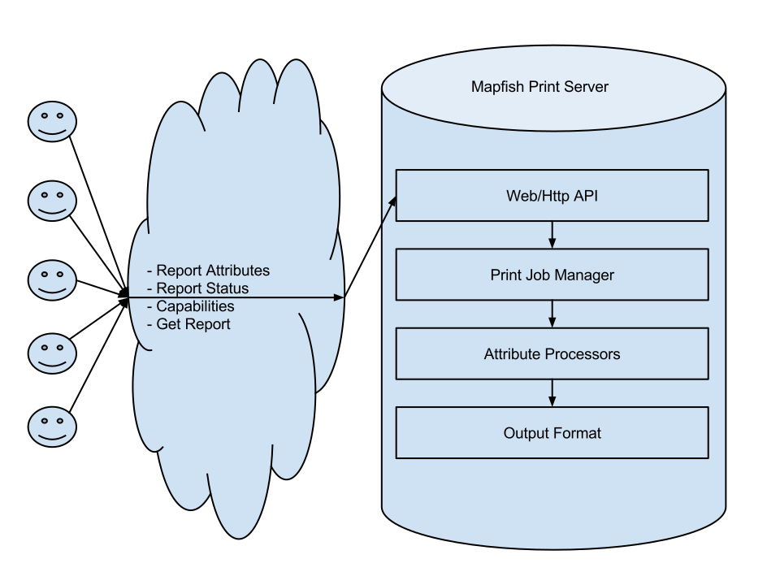

Overview
The purpose of Mapfish Print is to create reports that contain maps (and map related components) within them.
The project is a Java based servlet/library/application based on the mature Jasper Reports Library.
Getting started
A good way to get started with MapFish Print 3 is to follow the introduction workshop. Download the workshop here (zip archive).
Mapfish Print has the following distributions:
- The most commonly used distribution is the war distribution where Mapfish Print is a servlet and can be run in a servlet container like Apache Tomcat.
- Mapfish Print is also distributed as a Java jar which allows Mapfish Print to be used like a normal Java library, or embedded in an existing Java web application as an addition servlet.
- The last distribution is an command-line application where the reports can be generated via command line. This is useful for debugging configurations and requests.
Design Philosophy
The (much simplified) architecture of Mapfish Print is as follows:
This diagram illustrates how a client (web-client or Java application) communicates with the Mapfish Print Server. In the case of a Java application the communication is directly with the Java Servlet Object and for web-clients via HTTP requests. The protocol consists of several requests, only a few of which are shown in the diagram. For the full list of requests see: Web Protocol.
The typical request sequence a client will make is as follows:
- If the client is a generic client, the client will make a capabilities request in order to obtain information about the required attributes needed to be sent to the server.
- Next the create request will be made and all the attributes (the data required in order to print the report) are sent to the server. The server will return a reference id of the print job for obtaining the report and the status.
- Once the create request returns, the client will poll the server asking about the status of the print.
- Once the status request returns the completion response (and not an error) then the client will make the GET report request.
On the server side, once a create request is received the server will create a print job and send it to the job manager, which is
responsible for running the print job asynchronously (possibly on a completely different server) and allowing the HTTP request to
return a response to the user without waiting for the print job to complete. As an aside, there is a createAndGet request that will
wait until the printing is done and directly return the report without having to poll to see if the print is done. This is a
convenience for client makers.
While creating the print job all of the attributes are parsed from the JSON and a job reference id is generated to uniquely identify the created job.
Once the print job is started, the attributes are passed to the processors. The processors work with the attributes in order to generate the maps, tables, legends, etc... that are required by the output format (Jasper template).
Once the processors have all completed execution all of the values are passed to the output format which uses that information to generate the report. In theory an output format could be anything that generates a report. However the current version uses the Jasper Reports Library for its outputs and several of the processors are Jasper Reports focuses. Because of this the documentation will assume that the output format is always based on Jasper Reports.
The output format will generate a report and store it in some way for later retrieval. At this point the status request would return a response indicating that the print job has completed.